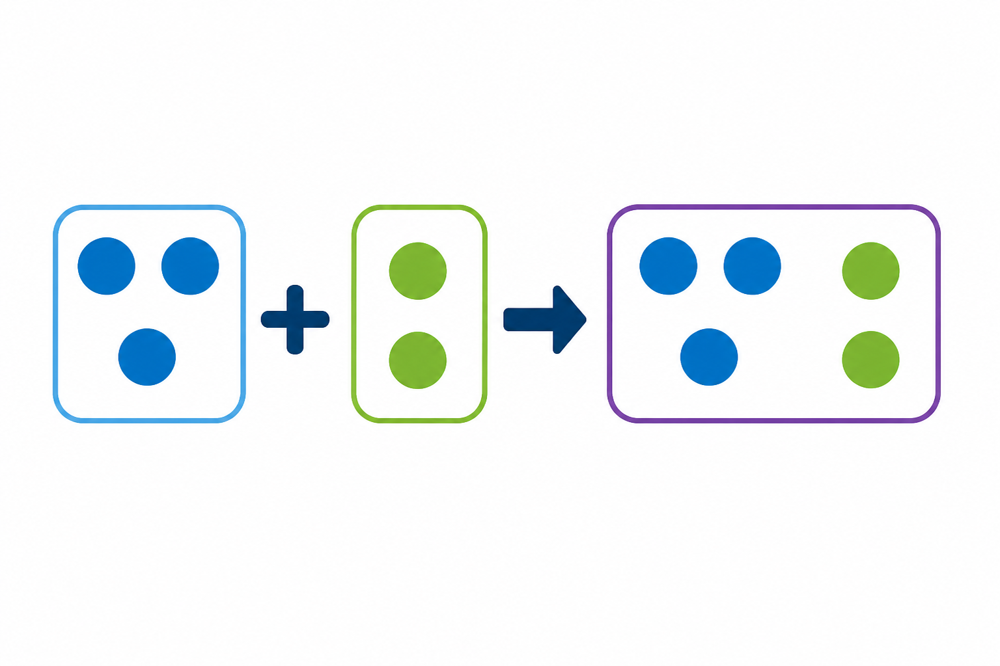

Co to jest? Що це?
Znak + oznacza dodawanie — łączymy liczby albo dokładamy.
Знак + означає додавання — об'єднуємо числа або докладаємо.
Jak w szkole? Як у школі?
Czytamy: „plus” albo „dodać”. Przykład: 3 + 5 = 8.
Читаємо: «плюс» або «додати». Приклад: 3 + 5 = 8.
Przykład z życia Приклад з життя
W zeszycie zamiast „dodać” stawiasz + — krócej i czytelniej.
У зошиті замість «додати» ставиш + — коротше й зрозуміліше.
3 + 5